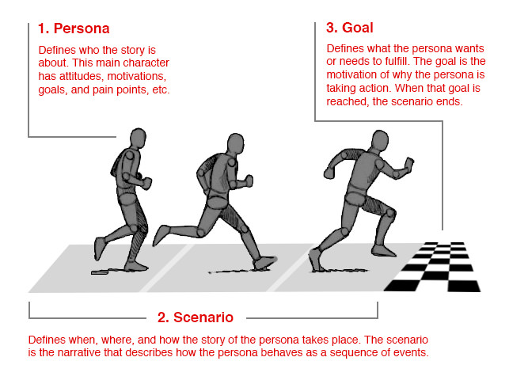

UX Strategy, User Journeys and Sitemaps
What is UX Strategy?
Paragraphy
User Journey

Takeaways
- takeaway list item
Best Practices
- best practices list item
Examples

Assignment
- Cypress Mountain Resort
- Identify three personas that represent the humans that would be likely to visit the resort website, and briefly summarize their use case.
- Select one of those personas and build a fictional / proto persona that includes data from the other persona types.
- Submission: IDES 212 folder on the server
- Due January 24 2020 at 12:00pm
Evaluation Critiera
| Value | Outcomes |
|---|---|
| 5 | The three personas you identified & summarized demonstrate an understanding of the differences between how a human would use the website. |
| 10 |
|
| 10 | Your persona is presented in a way that clearly displays the different characteristics, is logically organized, and follows best practices. It is also visually pleasing to look at. |